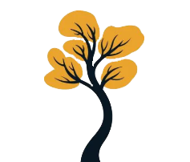

Presentación
Somos una organizacion sin fines de lucro dedicada a construir un mañana mejor a través de la educación ambiental y proyectos colectivos que transforman nuestro entorno.
Somos una organizacion sin fines de lucro dedicada a construir un mañana mejor a través de la educación ambiental y proyectos colectivos que transforman nuestro entorno.
Creemos en el poder de la participación vecinal. Trabajamos para recuperar los espacios verdes de nuestra comunidad y fomentar un futuro sostenible mediante el compromiso ambiental y el trabajo colaborativo.
Conoce más sobre nosotros
Árboles nativos plantados
Escuelas alcanzadas por nuestros talleres
Jornadas de limpieza realizadas
Trabajo voluntario y autogestionado